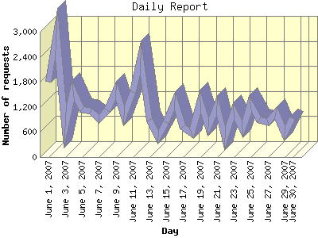

Report generated by Analog 6.0 and Report Magic 2.21
|
Web Server Statistics for "Harish Narayanan (hnarayan) - June 2007" Report generated by Analog 6.0 and Report Magic 2.21 |
The Daily Report identifies the activity for each day within the reporting period. Remember that one page hit can result in several server requests as the images for each page are loaded.

| Day | Number of requests | Number of bytes transferred | Percentage of the bytes | Percentage of the requests | |
|---|---|---|---|---|---|
| 1. | June 1, 2007 | 1,810 | 37.963 MB | 2.70% | 5.35% |
| 2. | June 2, 2007 | 2,963 | 59.734 MB | 4.24% | 8.75% |
| 3. | June 3, 2007 | 728 | 51.427 MB | 3.65% | 2.15% |
| 4. | June 4, 2007 | 1,589 | 41.323 MB | 2.93% | 4.70% |
| 5. | June 5, 2007 | 1,139 | 37.615 MB | 2.67% | 3.37% |
| 6. | June 6, 2007 | 1,109 | 46.888 MB | 3.33% | 3.28% |
| 7. | June 7, 2007 | 918 | 73.509 MB | 5.22% | 2.71% |
| 8. | June 8, 2007 | 1,120 | 63.775 MB | 4.53% | 3.31% |
| 9. | June 9, 2007 | 1,596 | 45.280 MB | 3.21% | 4.71% |
| 10. | June 10, 2007 | 995 | 26.998 MB | 1.92% | 2.94% |
| 11. | June 11, 2007 | 1,564 | 70.283 MB | 4.99% | 4.62% |
| 12. | June 12, 2007 | 2,373 | 64.213 MB | 4.56% | 7.01% |
| 13. | June 13, 2007 | 892 | 35.751 MB | 2.54% | 2.63% |
| 14. | June 14, 2007 | 470 | 20.561 MB | 1.46% | 1.39% |
| 15. | June 15, 2007 | 843 | 59.981 MB | 4.26% | 2.49% |
| 16. | June 16, 2007 | 1,347 | 61.235 MB | 4.35% | 3.98% |
| 17. | June 17, 2007 | 730 | 30.833 MB | 2.19% | 2.16% |
| 18. | June 18, 2007 | 562 | 26.503 MB | 1.88% | 1.66% |
| 19. | June 19, 2007 | 1,337 | 59.407 MB | 4.22% | 3.95% |
| 20. | June 20, 2007 | 728 | 29.115 MB | 2.07% | 2.15% |
| 21. | June 21, 2007 | 1,231 | 44.742 MB | 3.18% | 3.64% |
| 22. | June 22, 2007 | 463 | 37.295 MB | 2.65% | 1.37% |
| 23. | June 23, 2007 | 1,097 | 33.627 MB | 2.39% | 3.24% |
| 24. | June 24, 2007 | 666 | 66.924 MB | 4.75% | 1.97% |
| 25. | June 25, 2007 | 1,275 | 40.773 MB | 2.90% | 3.77% |
| 26. | June 26, 2007 | 899 | 52.903 MB | 3.76% | 2.66% |
| 27. | June 27, 2007 | 842 | 33.679 MB | 2.39% | 2.49% |
| 28. | June 28, 2007 | 1,067 | 54.385 MB | 3.86% | 3.15% |
| 29. | June 29, 2007 | 571 | 49.947 MB | 3.55% | 1.69% |
| 30. | June 30, 2007 | 924 | 51.512 MB | 3.66% | 2.73% |
Most active day June 19, 2007 : 403 pages sent. 2,963 requests handled. 62,635,401.00 served.
Daily average: 1,128 requests handled. 46.939 MB served.
This report was generated on August 3, 2007 10:00.
Report time frame June 1, 2007 00:00 to June 30, 2007 23:55.
| Web statistics report produced by: | |
 Analog 6.0 Analog 6.0 |  Report Magic 2.21 Report Magic 2.21 |